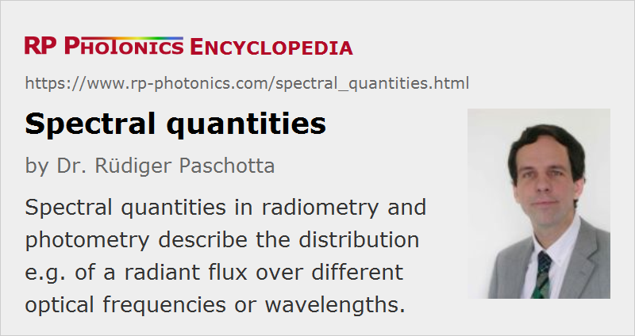

Spectral Quantities
Definition: quantities in radiometry and photometry which describe the distribution e.g. of a radiant flux over different optical frequencies or wavelengths
German: spektrale Größen
Category: light detection and characterization
How to cite the article; suggest additional literature
Author: Dr. Rüdiger Paschotta
In radiometry and photometry, some of the used quantities are spectral quantities, which generally depend on the optical frequency or wavelength. Some of them are simply frequency-dependent properties of materials or objects, such as a reflectance, transmittance or absorbance. Others describe the distribution e.g. of a radiant flux over different optical frequencies or wavelengths. Their symbols often contain “ν” (for the optical frequency) or “λ” (for the wavelength) in the subscript.
For example, the spectral flux Φe,ν is the radiant flux Φe per (infinitesimally small) unit frequency integral in fundamental units of W/Hz; similarly Φe,λ is the radiant flux per unit wavelength interval in units of W/m.
Some important examples of such quantities:
| Quantity | Symbol | Units | Remarks |
|---|---|---|---|
| spectral flux | Φe,ν Φe,λ | W/Hz W/nm | radiant flux per unit frequency or wavelength |
| spectral intensity | Ie,Ω,ν Ie,Ω,λ | W sr−1 Hz−1 W sr−1 nm−1 | radiant intensity per unit frequency or wavelength |
| spectral radiance | Le,Ω,ν Le,Ω,λ | W sr−1 m−2 Hz−1 W sr−1 m−2 nm−1 | radiance per unit frequency or wavelength |
| spectral irradiance | Ee,ν Ee,λ | W m−2 Hz−1 W m−2 nm−1 | irradiance per unit frequency or wavelength |
| spectral radiosity | Je,ν Je,λ | W m−2 Hz−1 W m−2 nm−1 | radiosity per unit frequency or wavelength |
| spectral exitance | Me,ν Me,λ; | W m−2 Hz−1 W m−2 nm−1 | radiant exitance per unit frequency or wavelength |
| spectral exposure | He,ν He,λ | J m−2 Hz−1 J m−2 nm−1 | radiant exposure per unit frequency or wavelength |
| spectral luminous flux | Φv,ν Φv,λ | lm Hz−1 lm nm−1 | luminous flux per unit frequency or wavelength |
| spectral luminous intensity | Iv,ν Iv,λ | cd Hz−1 cd nm−1 | luminous intensity per unit frequency or wavelength |
| spectral illuminance | Ev,ν Ev,λ | lx Hz−1 lx nm−1 | illuminance per unit frequency or wavelength |
(The subscript “e” stand for energy, indicating radiometric quantity, while “v” stands for “vision”, indicating photometric quantities.)
By integration of those quantities over all optical frequencies or wavelengths, respectively, one obtains the corresponding integral quantities. For example, the radiant flux equals the frequency- or wavelength-integrated spectral flux.
In most cases, the spectral distributions result from statistical processes. A notable exception is the generation or ultrashort pulses with mode-locked lasers, which is a highly deterministic process. Here, optical spectra maybe calculated from power spectral densities of field amplitudes.
Conversion Between Frequency- and Wavelength-related Spectral Quantities
Note that it is not correct e.g. to integrate Φe,ν (a quantity referring to optical frequencies) over all wavelengths, simply using the argument ν = c / λ. Even the resulting units would not be correct. One also needs to take into account the conversion from frequency to wavelength intervals. As we can calculate the integrated radiant flux as
we must conclude that
where the conversion factor is wavelength-dependent.
A consequence of that is that the peak location of a spectral quantity in terms of optical frequency does not generally agree with c divided by the peak wavelength, calculated from the corresponding wavelength-related quantity. In cases with broad spectral distributions – for example, the spectrum of blackbody radiation –, that can make a substantial difference.
Questions and Comments from Users
Here you can submit questions and comments. As far as they get accepted by the author, they will appear above this paragraph together with the author’s answer. The author will decide on acceptance based on certain criteria. Essentially, the issue must be of sufficiently broad interest.
Please do not enter personal data here; we would otherwise delete it soon. (See also our privacy declaration.) If you wish to receive personal feedback or consultancy from the author, please contact him e.g. via e-mail.
By submitting the information, you give your consent to the potential publication of your inputs on our website according to our rules. (If you later retract your consent, we will delete those inputs.) As your inputs are first reviewed by the author, they may be published with some delay.
See also: radiometry, photometry, optical spectrum, spectral phase, power spectral density
and other articles in the category light detection and characterization
|  |
If you like this page, please share the link with your friends and colleagues, e.g. via social media:
These sharing buttons are implemented in a privacy-friendly way!